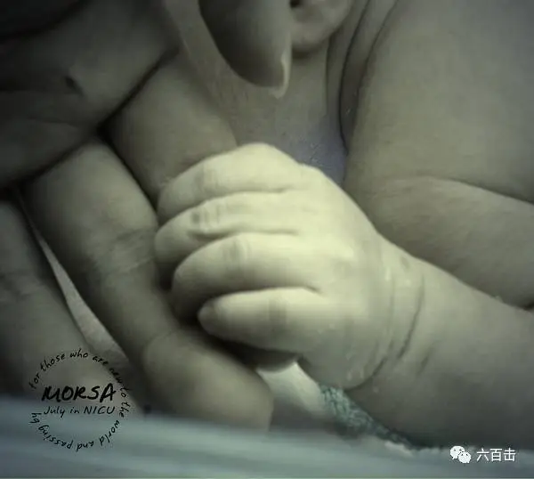
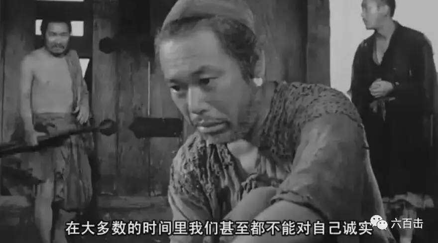
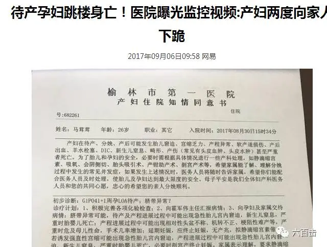
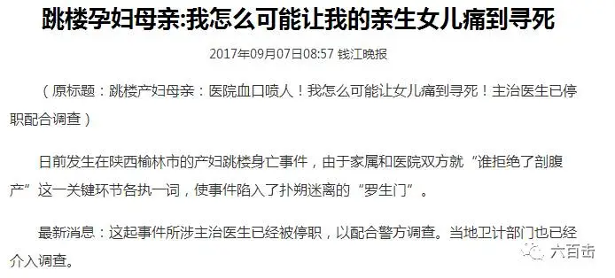

医院产房声音的收录、心电机的声音、婴儿的哭声、吉他、钢琴、小提琴.....新生命的诞生与希望
来一起感受他们的作品
这两天“待产孕妇跳楼的悲剧”使整个朋友圈都陷入到压抑和害怕之中，也让我们知道一个孩子的诞生是多么大的奇迹。今天向大家推荐一张台湾乐队MORSA的专辑《july in NICU》，乐队成员来自台北医学大学各个科系的学生，这张以医学人文为题材的作品，记录了乐队成员在新生儿加护病房以及南亚海啸医疗服务队中，面对脆弱新生们的复杂情绪

乐队成员在编曲演奏的过程中，除了本身对于乐器与音乐的爱好，彼此之间更在乎曲子背后带给他们的想法与反思，以接触“人”，来反思自己，除了感性浪漫的一面，乐队更是寻求与理性现实之间的平衡，将“人味”带入到了音乐当中。
首曲《NICU JULY 20》为了忠实呈现新生儿在医护房中的场景，从录制医院内工作情形、到乐器以钢琴缓慢铺陈、鼓刷营造漫步在长廊中的景象，为的就是一第一人称的角度来诠释迎面而来的一景一物。而《whisper》描写的是新生儿刚出生身体状况连日不稳定与家属者自我心境上的低潮，昏昏欲睡的阴雨过后，耳边响起熟悉的细语，充满了对美好未来的向往。
“我伫立在新生儿加护病房的某个角落想着。
望着漫长的尽头，我光着脚缓慢地走着。
我低头看着自己的脚步，
一步一步踏在这冰冷的白色长廊上。
拿起相机，拍下自己在镜头里的脚步。
心里想着的是那刚来到这世界的孩子，
他和我一起走在这镜头下的步伐。
一直到停止呼吸的警示声响起，
才惊觉自己被卷入生命交织的淌流中。
停止，等待。
生命的方向正在抉择。”
希望这张专辑能够带给我们不一样的感觉和希望
产妇跳楼悲剧是现实版的罗生门
同时向大家推荐黑泽明的名作《罗生门》，此片于1951年荣获威尼斯国际电影节金狮奖以及第23届奥斯卡最佳外语片奖，主要讲述了一起由武士被杀而引起的一宗案件以及案件发生后人们之间互相指控对方是凶手的种种事情以及经过的故事。

故事发生在12世纪的日本，在平安京发生了一件轰动社会的新闻，武士金泽武弘被人杀害在丛林里。作为证人，樵夫、强盗多襄丸、死者的妻子真砂、借死者的魂来做证的女巫都曾被招到纠察使署，但他们都怀着利己的目的，竭力维护自己，提供了美化自己、使得事实真相各不相同的证词。本片揭露了人性的真实——“人心比万物都诡诈，坏到极处，谁能识透呢？”而孕妇跳楼悲剧发生之后，医院、家属也上演了这样一场现实版“罗生门”


希望这场悲剧让我们反思的不仅仅是家属、医院的处理方式和态度，更加让我们明白人性的真相，知道我们心中并无良善，希望死者安息。希望今天的音乐和电影带给我们更多的思考。
相关阅读：
走近大师 | 深紫色叙事思想家——基耶斯洛夫斯基
一个唯科学主义者的悲剧
当孩子还是孩子时
没有过去的男人
这里没有挑逗你眼目情欲的小鲜肉，也没有挑动你肉体情欲的段子
更没有膨胀你今生骄傲的鸡血。
我们只在乎那些最质朴真诚的作品，在那里我们才能恢复真正的想象力
我们也坚信这才是我们真正需要的。